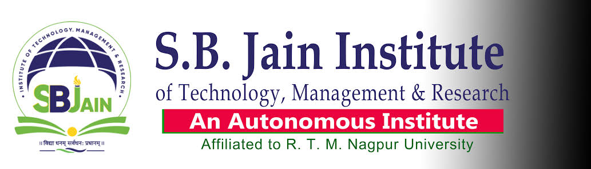

IT'S ME RAVIKANT
Home
Hobbies
College
City

S. B. Jain Institute of Technology, Management and Research (SBJITMR) an autonomous institute, formerly known
as S B Jain College of Engineering, is a college in Nagpur, India. It was established in 2008 by the Shantilal
Badjate Charitable Trust. The institute is sanctioned by AICTE in New Delhi, DTE in Mumbai, and is partnered to
Nagpur University.
History:
The institution was established in 2008 by the Shantilal Badjate Charitable Trust, an
initiative of Shri Shantilalji Badjate, who devoted his life to education.
In February 2018, the Institute held the annual event "Technostav", which ran for three days and which was
organized by the "Student Representative Council". The 2019 edition of the event was also held and ran from 23
to 25 January 2019, and this was also supported by the "Central Decipline [sic] Team".
In March 2021, the University Grants Commission and Rashtrasant Tukadoji Maharaj Nagpur University granted
autonomous status to the Institute for 10 years from the 2020-2021 academic session.
Campus:
The institute is situated on a 14-acre (5.7 ha) campus that was designed with a British
architectural pattern.
Departments:
1. Electrical Engineering
2. Electronics and Telecommunication Engineering
3. Artificial Intelligence & Data Science
4. Electronics Engineering
5. Computer Science and Engineering
6. Emerging Technologies [AI&DS]
7. Mechanical Engineering
8. Business Administration (MBA)
9. Electronics Engineering (M.Tech)
10. Artificial Intelligence & Machine Learning (Extinct)